Stoichiometric Analysis¶
Preliminaries¶
A network of  chemical species and
chemical species and  reactions can be described by the
by stochiometry matrix 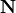. 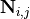 is the net number of
species
reactions can be described by the
by stochiometry matrix 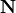. 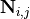 is the net number of
species  produced or consumed in reaction
produced or consumed in reaction  . The dynamics of the network are
described by
. The dynamics of the network are
described by

where 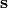 is the vector of species concentrations,  is a vector of time independent parameters, and
is a vector of time independent parameters, and  is time.
is time.
Each structural conservation, or interchangably, conserved sum (e.g. conserved moiety) in the network coresponds to a lineraly dependent row in the stoichiometry matrix .
If there are conserved sums, then the row rank,  of
of  is
is  , and
the stochiometry matrix may first be re-ordered such that the first are linearly
independent, and the remaining 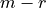 rows are linear combinations of the first
rows. The reduced stochiometry matrix 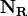 is then formed from the first
rows of . Finally, may be expressed as a product of the 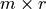
link matrix and the 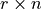 matrix:
, and
the stochiometry matrix may first be re-ordered such that the first are linearly
independent, and the remaining 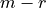 rows are linear combinations of the first
rows. The reduced stochiometry matrix 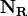 is then formed from the first
rows of . Finally, may be expressed as a product of the 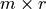
link matrix and the 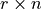 matrix:
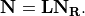
The link matrix has the form
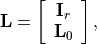
where 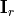 is the 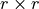 identity matrix and 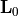 is a 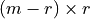 matrix.
Full vs. Extended Stoichiometry Matrix¶
The “full” stoichiometric matrix includes any conserved quantities (as opposed to the reduced stoichiometric matrix, which does not). The extended stoichiometric matrix is equal to the full stoichiometric matrix plus additional rows representing boundary species and sources / sinks. For example, consider the following reaction system:
reaction1: => C
reaction2: C =>
reaction3: C =>
reaction4: MI => M
reaction5: M => MI
reaction6: XI => X
reaction7: X => XI
The extended stoichiometry matrix for this system is:
>>> rr.getExtendedStoichiometryMatrix()
reaction1, reaction2, reaction3, reaction4, reaction5, reaction6, reaction7
C [[ 1, -1, -1, 0, 0, 0, 0],
M [ 0, 0, 0, 1, -1, 0, 0],
X [ 0, 0, 0, 0, 0, 1, -1],
MI [ 0, 0, 0, -1, 1, 0, 0],
XI [ 0, 0, 0, 0, 0, -1, 1],
reaction1_source [ -1, 0, 0, 0, 0, 0, 0],
reaction2_sink [ 0, 1, 0, 0, 0, 0, 0],
reaction3_sink [ 0, 0, 1, 0, 0, 0, 0]]
Methods¶
The following methods are related to the analysis of the stoichiometric matrix.
|
|